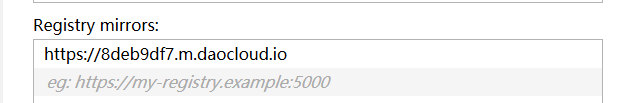

1.下载docker
- 在docker官网 https://www.docker.com/community-edition#/download 中下载Docker for Windows 17.12.0-ce-win47版本


2.下载完成
- 下载完成后，打开文件夹找到相应的安装包


3.安装
- 下载完成后，双击打开安装包，进行安装，安装完毕，出现此界面表示docker安装成功

4.加速器注册
- 下载安装成功之后，在DaoCloud官网 http://www.daocloud.io/mirror#accelerator-doc 中注册账号获取加速器地址。

5.配置加速器
- 在docker中配置加速器，docker–perferences(setting)–Daemon–Registry mirrors中填写加速器地址

或在Daemon中从Basic切换Advanced，写入如下json
1 | { |
max-concurrent-downloads” : 1 (表示下载线程数为1，不会出现线程卡死的情况)
6.下载Gitlab镜像
1 | $docker pull gitlab/gitlab-ce |

7.错误整理
如上步骤安装完docker之后，运行下载Gitlab命令无效，推测可能是因为加速器配置无效导致的。如下图所示

7.1 系统版本
- 如下为电脑的系统版本

- 尝试添加https仍然无效

- 按照网上的其他答案，参照修改了dns和关闭防火墙，依然无效

未完，持续补充。。。